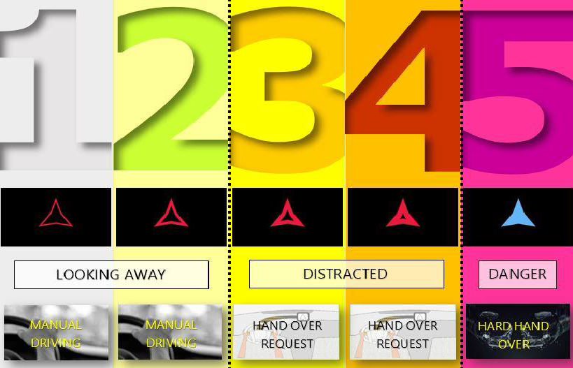
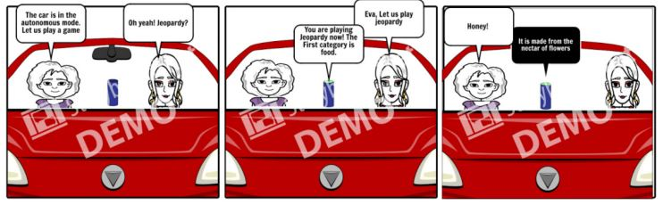

Inducing trust in an Autonomous Vehicle using a socially interactive agent: Lisa
Problem Statement
With the emergence of Autonomous vehicle technologies, many challenges remain within the area of human factors, such as user trust for Autonomous Driving (AD). This project aimed to address the issue of trust in an autonomous vehicle in level 2 automation, through the use of social cues. This was done in two ways:
1. The first way investigated how hand-over and take-over procedures can be handled in a way that is clearly understandable for both the human and the machine by the implementation of an intelligent agent.
2. The second way wass to understand how an appropriate level of user trust for AD vehicle systems can be created via human-machine interaction (HMI). This problem was addressed by implementing an intelligent agent that could aid social interaction among passengers as well as interaction of the user with the agent through gamification facilitated by speech recognition.
My Role
I was actively involved in programming both prototype. Apart from that I also conducted a 5 participant user research to define the voice dialogues used by the agent in the project.
Design Approach
To address the problem of trust in an Autonomous Vehicle, a technology oriented approach was chosen. The aim was to create an agent, LISA who is interactive and intelligent to detect the behavior of the driver.
The first part of this project aimed to produce a design solutions for knowing how and when the agent should request the user to hand over control and or even take over the control of the user in case of a possible dangerous situation. The intention of the system is communicated to the user with the help of an agent which keeps track of the driver’s behaviour, in case the system is confident that the driver is distracted the agent will ask the driver to hand over control.

In the second part we tried to create trust on the Agent by creating situational awareness and to enhance social interaction through gamification. For this, a speech based game is used because a speech based interaction with an in-Vehicle agent can be used to increase driver’s performance and also be used as a tool to create trust on the vehicle. The game used is Ispy, a guessing game where one of the players playing the game is a spy. The other players guess what the spy is thinking. This can be used to create situational awareness, when the agent spies at something that it sees in its surroundings.

Prototype
A Microsoft Kinect 2 sensor is used to check whether a driver enters the vehicle. After the face detection algorithm has identified a face it checks whether the driver is focusing on the driving task or not. If the driver is not focussed the agent will turn red and starts slowly filling up every second the driver is not focussing. After 3 seconds of inattention the driver is no longer marked as merely looking away but as truly distracted. This will initiate a handover request by the system. The request is presented to the user by a walking movement of the lights of the LED strip, suggesting a requesting gesture. Finally, if the user after 5 seconds is still not responding to the signals, the system takes over control. At the final stage, the LED strip will fill up first followed by the appearance change of the agent, turning from red to blue.
Once the AV is in autonomous mode passengers are able to engage in a social interaction with the agent. The agent can be invoked by using it’s name, Lisa.
Evaluation of Prototype
The model presented has an accuracy of 94.65% while predicting driver behavior, thus it is clear that the machine is able to interpret and understand the behavior of the user. Further evaluation is required before it can be placed in a vehicle.
Click here to read the complete report.